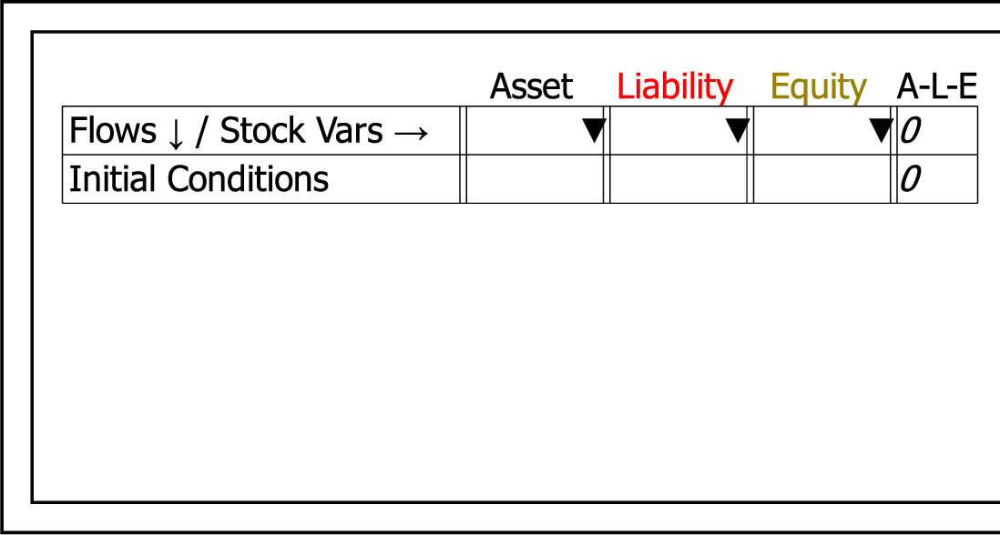

This toggle command adds row and column buttons to a double-entry bookkeeping view of the table on the canvas, so that it can be edited on the canvas as an alternative to editing in the dedicated window.
